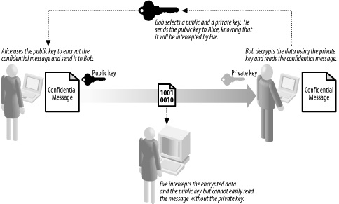
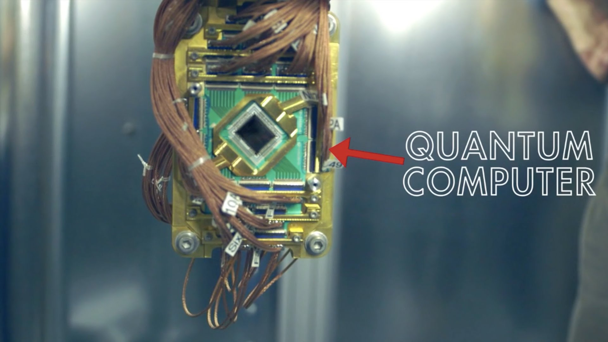

AES
DES did not last forever. As technology developed, the relatively short 64 bit key became breakable. DES was also made for hardware and was not able to take advantage of the efficeiency of software and microprocessors. The National Institute of Standards and Technology was founded in 1901 and became part of the U.S Department of Commerce. In 1997 NIST sent out a call for proposals to replace DES. Th result was AES- the Advanced Encryption Standard. It was created by two Belgian Cryptographers. It is a block cipher like DES. It is actually comrpised of three block ciphers, for 128, 192, and 256 bit keys. The larger key size and larger 128bit block size of AES make it more secure. It is also designed for implementation of both ahrdware and software making it more efficient than DES.
Other types of encryption today include RSA. Unlike all the other algorithims we have looked at, RSA is not symmetric. This means that you cannot just run it backwards to decode it. RSA consists of a public and private keys, each of which is generated using large prime numbers and the private key is made to be the multiplicative inverse of teh public key based on its modulus and totient. The use of both a public and private key makes RSA very secure. The way public and private keys work is described in the image below. The algorithim was developed in 1977, at the time it was not used much as it required relatively expensive equiptment. However, it was released to the public domain in 2000. It is widely used today for things like digital signatures and exchanges of elctronic money, like bitcoin.

Quantum
While each of these methods are more secure than their predeccesors, as technology changes encryption must change with it. New discoveries in quantum computing threaten all of today's enccryption techniques obselete. However, quantum cryptography to keep the internet secure is already being researched.

Click to go back!